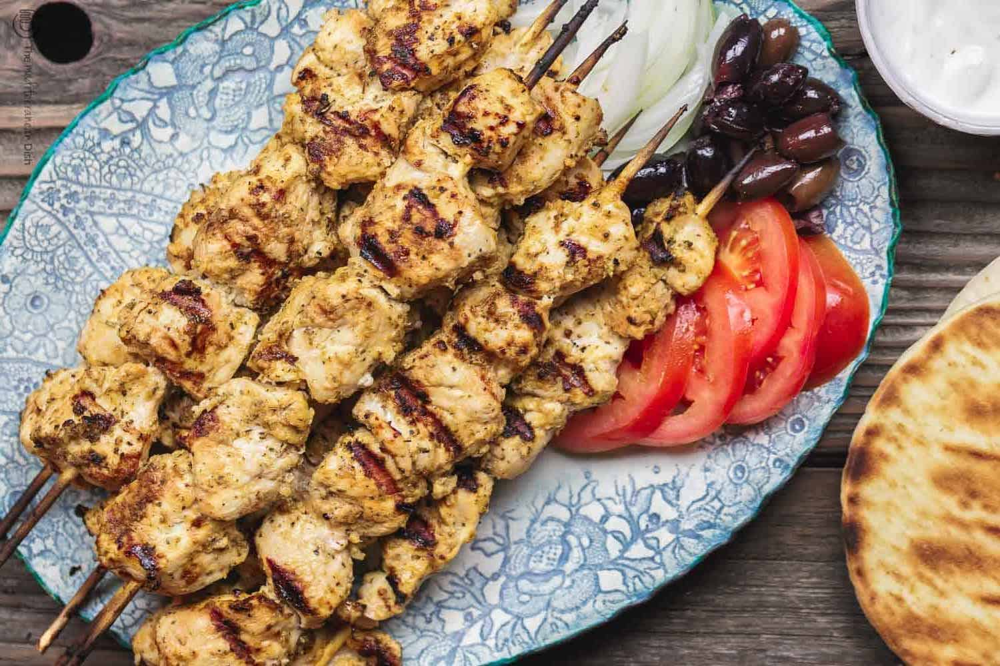

Greek Chicken Souvlaki
What is Greek Chicken Souvlaki?
Greek Chicken Souvlaki is a popular Greek dish that consists of marinated chicken skewers that are grilled and served with a variety of toppings and sides.
Ingredients
10 garlic cloves (peeled)
2 tablespoons dried oregano
1 tablespoon dried rosemary
1 tablespoon sweet paprika
1 tablespoon red pepper flakes
1 tablespoon black pepper
1/4 cup Private Reserve Greek Extra Virgin Olive Oil
1/4 cup white dry wine
1 lemon (juiced)
2 bay leaves
2.5 pounds boneless, skinless organic chicken breasts (cut into 1 1/2-inch pieces)
Pita bread
Tzatziki
Tomato
Cucumber
Onion
Kalamata olives
Greek salad
Roasted garlic hummus
Meze plate
Watermelon and cucumber salad
Instructions / How to Cook
1. In a small food processor, add 10 peeled garlic cloves, 2 tablespoons dried oregano, 1 tablespoon dried rosemary, 1 tablespoon sweet paprika, 1 tablespoon red pepper flakes, 1 tablespoon black pepper, 1/4 cup Private Reserve Greek Extra Virgin Olive Oil, 1/4 cup white dry wine, and juice of 1 lemon (do NOT add the dried bay leaves yet). Pulse until well combined.
2. Place 2.5 pounds boneless, skinless organic chicken breasts in a large bowl and add 2 bay leaves. Top with marinade.
3. Cover and refrigerate for at least 3 hours or overnight.
4. Preheat grill to medium-high heat.
5. Thread chicken onto skewers.
6. Grill skewers for 3 minutes on each side, or until cooked through.
7. Serve with pita bread, tzatziki, tomato, cucumber, onion, Kalamata olives, Greek salad, roasted garlic hummus, meze plate, and watermelon and cucumber salad.